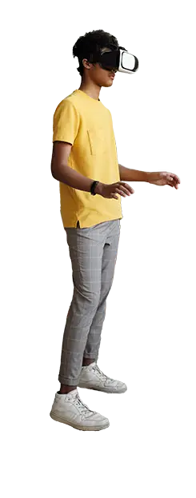

Centro Multimídia
O Centro Multimídia (CeMu) é o núcleo responsável por realizar pesquisa sistemática de matérias presentes na imprensa, em documentários e filmes já produzidos na Ilha Grande. Tem como objetivo contribuir para a historiografia – registro e memória – sobre o local, em termos de patrimônio, história e cultura, por meio das mídias digitais, garantindo ao cidadão o acesso à informação.
